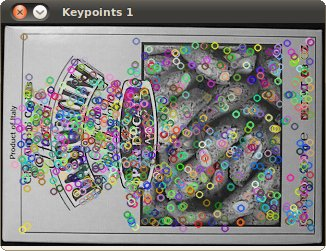

Shi-Tomasi corner detector
Goal
In this tutorial you will learn how to:
- Use the function cv::goodFeaturesToTrack to detect corners using the Shi-Tomasi method.
Theory
Code
This tutorial code’s is shown lines below. You can also download it from here
#include "opencv2/imgcodecs.hpp" #include "opencv2/highgui.hpp" #include "opencv2/imgproc.hpp" #include <iostream> using namespace cv; using namespace std; Mat src, src_gray; int maxCorners = 23; int maxTrackbar = 100; RNG rng(12345); const char* source_window = "Image"; void goodFeaturesToTrack_Demo( int, void* ); int main( int, char** argv ) { src = imread( argv[1], IMREAD_COLOR ); cvtColor( src, src_gray, COLOR_BGR2GRAY ); namedWindow( source_window, WINDOW_AUTOSIZE ); createTrackbar( "Max corners:", source_window, &maxCorners, maxTrackbar, goodFeaturesToTrack_Demo ); imshow( source_window, src ); goodFeaturesToTrack_Demo( 0, 0 ); waitKey(0); return(0); } void goodFeaturesToTrack_Demo( int, void* ) { if( maxCorners < 1 ) { maxCorners = 1; } vector<Point2f> corners; double qualityLevel = 0.01; double minDistance = 10; int blockSize = 3; bool useHarrisDetector = false; double k = 0.04; Mat copy; copy = src.clone(); goodFeaturesToTrack( src_gray, corners, maxCorners, qualityLevel, minDistance, Mat(), blockSize, useHarrisDetector, k ); cout<<"** Number of corners detected: "<<corners.size()<<endl; int r = 4; for( size_t i = 0; i < corners.size(); i++ ) { circle( copy, corners[i], r, Scalar(rng.uniform(0,255), rng.uniform(0,255), rng.uniform(0,255)), -1, 8, 0 ); } namedWindow( source_window, WINDOW_AUTOSIZE ); imshow( source_window, copy ); }
Explanation
Result
